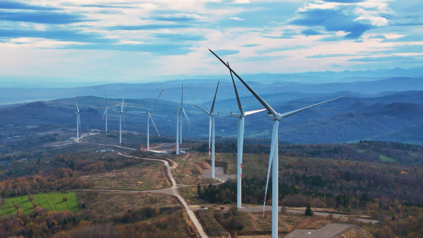
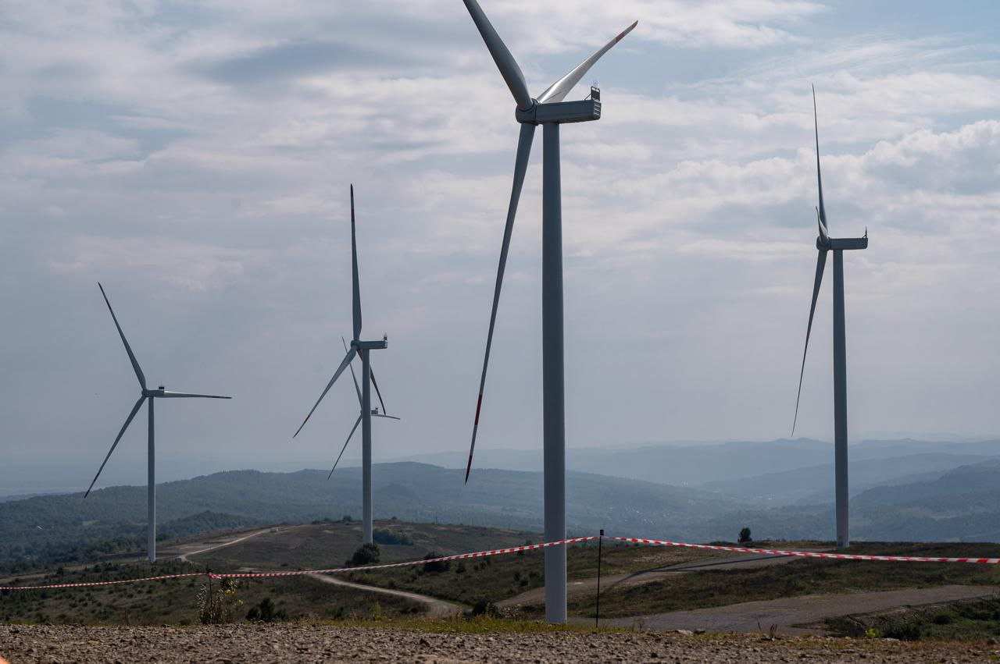

Про об'єкт
Вітрова станція «Приазовська» є одним із ключових об'єктів відновлюваної енергетики на півдні України. Введена в експлуатацію для максимального використання високого вітрового потенціалу узбережжя, станція генерує екологічно чисту електроенергію. Вона відіграє важливу роль у зменшенні викидів парникових газів та зниженні вуглецевого сліду в індустріально навантаженому регіоні.
Об'єкт оснащений сучасними вітротурбінами загальною потужністю 150 МВт. Інноваційні системи автоматизованого моніторингу та управління дозволяють миттєво адаптувати кут нахилу лопатей та напрямок гондол до швидкості вітру. Це забезпечує максимальну ефективність генерації електроенергії та її стабільну інтеграцію в об'єднану енергосистему України навіть за мінливих погодних умов.

Технічні параметри
| Параметр | Значення | Одиниці виміру |
|---|---|---|
| Номінальна потужність | 150 | МВт |
| Напруга генерації (НН) | 0.69 | кВ |
| Напруга видачі (ВН) | 35 | кВ |
| Кількість вітрогенераторів | 50 | шт |
| Висота башти турбіни | 110 | м |
| Діаметр ротора | 120 | м |
| Рік введення в експлуатацію | 2021 | рік |
| Система управління | SCADA (автоматизована) | - |

Контактна інформація
Зв'яжіться з нами
Адреса: Запорізька обл., Приазовський район
Телефон: +380 (61) 234-56-78
Email: info@priazov-wind.ua
Режим роботи: Диспетчерська – цілодобово